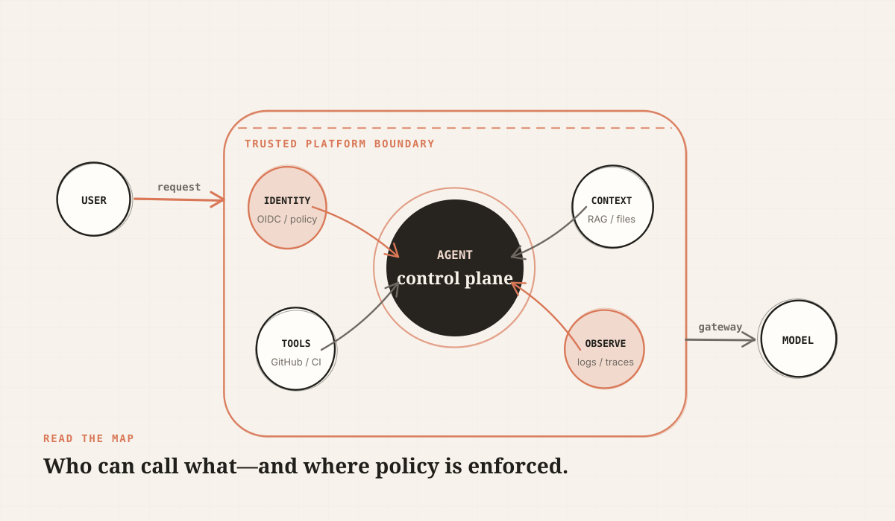
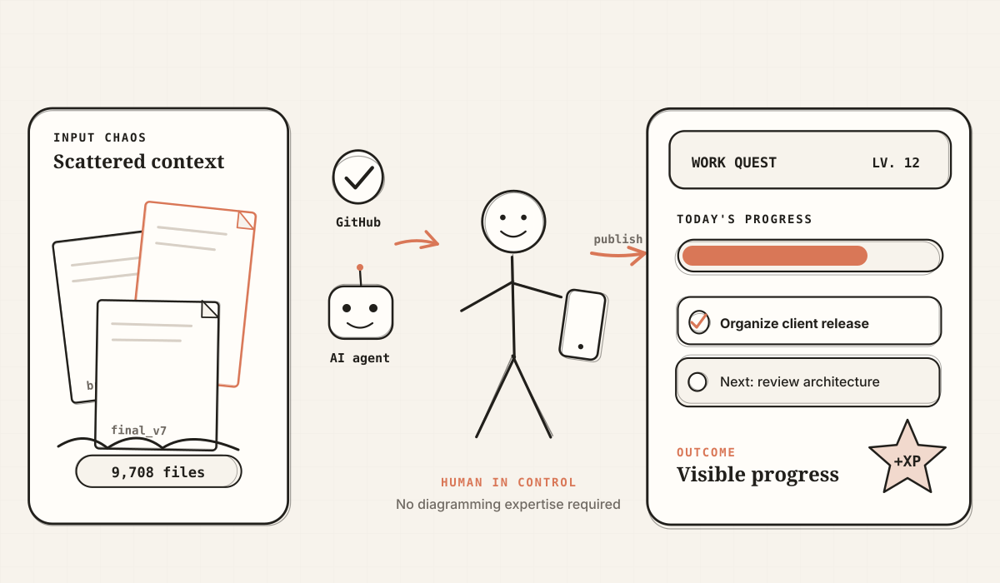
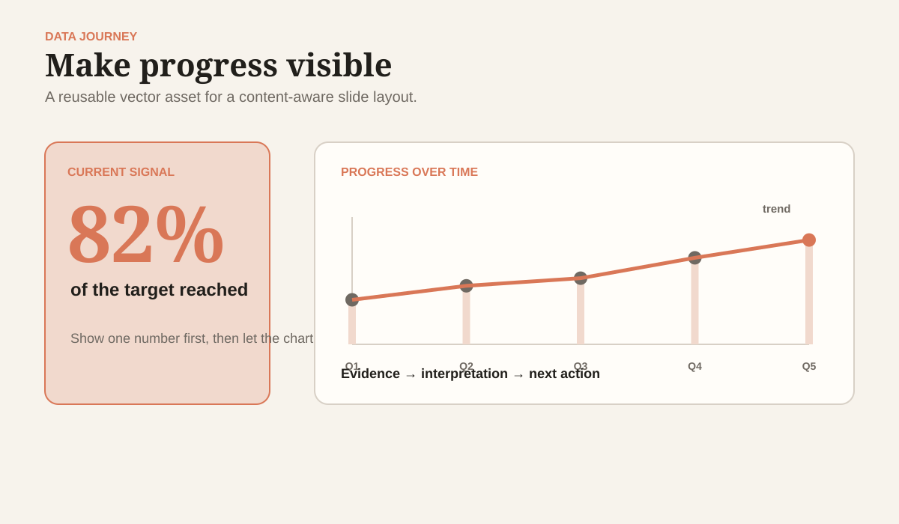
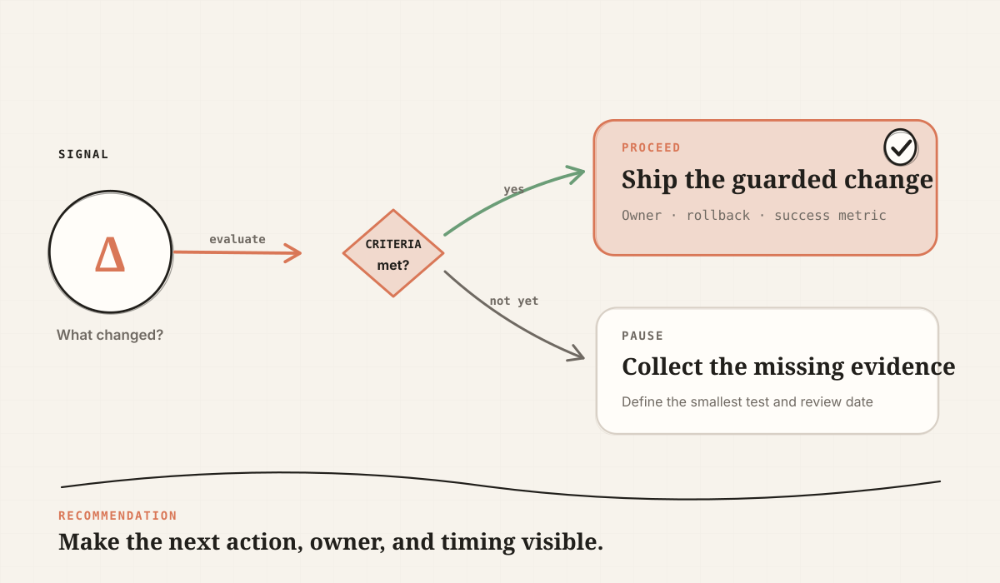
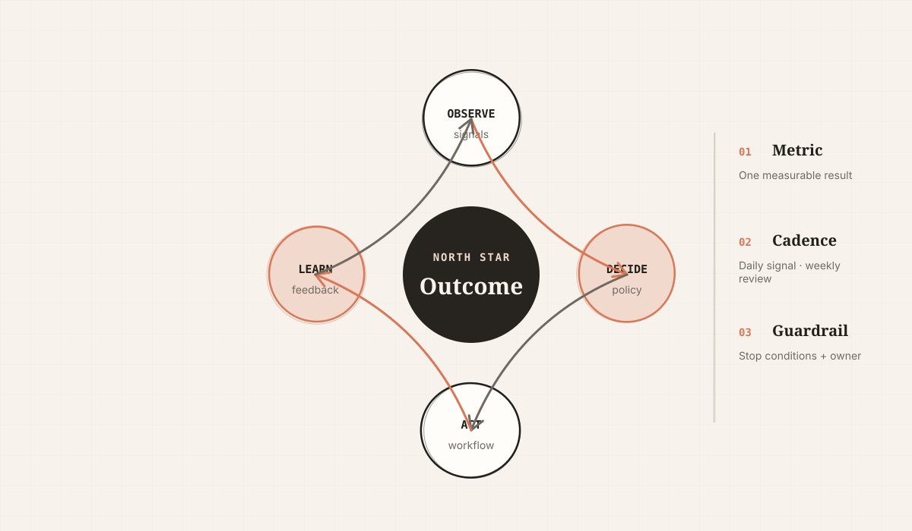

Different labels, same geometry
- Left copy and right card
- Cards for unrelated content
- Flat thumbnail rhythm
PRESENTATION / {{DATE}}
Replace this sentence with the one promise your audience should remember.
01 / THESIS
CLAIM + PROOFKeep the visual language stable while varying composition, geometry, density, and eye path.
02 / STORY MAP
FOUR MOVESUse the index as a promise of movement rather than a list of every topic.
03 / TRANSFORMATION
CURRENT → TARGETUse matched criteria so the audience sees the actual change instead of two unrelated lists.
04 / LAYERED ARCHITECTURE
OWNERSHIP · TRUST · OPERATIONSLabel who owns each layer, what it exposes, and where policy is enforced.
05 / OUTCOME
ONE NUMBER DOMINATESof a ten-slide deck should use a distinct composition before any geometry repeats.
06 / SYSTEM MAP
ACTORS · HUB · BOUNDARYUse a hub when orchestration is central; use the boundary to show trust and ownership.

07 / EVIDENCE
PROOF BEFORE EXPLANATIONReplace illustrative data with a verified source, date, and definition.
Keep explanation adjacent, but let the chart, screenshot, quotation, or artifact remain the anchor.
08 / FLOW ARCHITECTURE
LABEL THE ARROWSDirect labels beat legends. Every arrow should name data, protocol, identity, or decision.
Brief, data, code, research.
Plan the story and call tools.
Check claims, export, and risk.
Decision, owner, next step.
09 / ANNOTATED VISUAL
ONE ARTIFACT · THREE REASONSUse two to four callouts. The audience should still be able to see the underlying interface or architecture.
Use a boundary because policy changes here.
Move caveats to speaker notes.
Hierarchy keeps the canvas dominant.
2Context stays adjacent to the artifact.
3Action remains visible without another card grid.
10 / INFOGRAPHIC STORY
CHAOS → HUMAN + AGENT → OUTCOMEThe result should be tangible: a decision, dashboard, shipped asset, or changed behavior—not a generic “result” box.

11 / BUILD
COMMAND AS EVIDENCECrop to the lines the audience needs and pair them with the visible outcome.
$ codex-slides init "Architecture Review" \
--format pptx \
--template claude-editorial
✓ 20 layout starters created
✓ geometry audit passed
✓ editable PPTX source generated12 / DATA JOURNEY
STATE + MOVEMENT + DECISIONA large metric earns attention; the trend and definition make it trustworthy.

13 / VOICE OF EVIDENCE
QUOTE → CONTEXT → IMPLICATIONWe stopped debating slide decoration and started discussing the architecture decision.
A quotation is evidence only when the source is real, the context is clear, and the interpretation is explicit.
14 / TRADE-OFF
SHARED AXIS15 / DECISION
SIGNAL → CRITERIA → ACTIONMake the evaluation point explicit, then show the consequence of proceeding or collecting evidence.

16 / OPERATING MODEL
OBSERVE · DECIDE · ACT · LEARNAnchor the loop on one measurable outcome, then name cadence, guardrails, and ownership.

17 / ADOPTION
NOW → NEXTName archetypes, geometry, and purpose.
Ship diverse starters in every format.
Audit sequence, geometry, density, and export.
Add patterns from real presentation work.
18 / RISK
PROBABILITY × IMPACTMitigate with role and dominant-element selection.
Cap generic split pages near 35%.
Keep shared tokens and page chrome.
THE DECISION
Choose geometry by communication purpose, then let the design system keep the deck coherent.